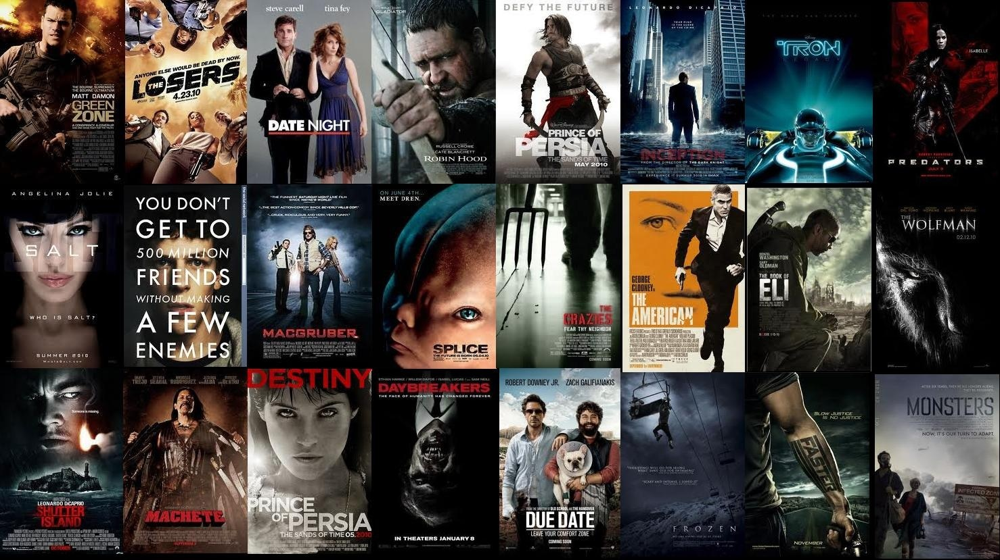

I studied my Masters at the Katholieke Universiteit Leuven (Belgium) in
Astronomy and Astrophysics where I undertook numerous challenging projects and
assignments from different courses. One such key project was the MERCATOR Master Project, for which I
was the Lead-Investigator. Our team proposed a unique scientific idea, planned an
observation schedule for the allotted
telescope time, conducted onsite observations, and performed a
thorough analysis of the obtained data. I have worked
on mathematical and numerical aspects of various projects for which I
wrote and implemented codes, solved mathematical
equations, formulated algorithms and obtained graphical solutions. Additionally,
I have worked on individual projects and have also successfully collaborated with a team on
various occasions, while presenting my work to the general audience in the form of scientific talks and presentations.
Following my
pursuit to know more about the universe led me to work with a lot of data that directed
me to develop an interest in programming and exploring data science.

Given historical data on loans with information on whether
or not the borrower defaulted (charge-off), we can build a model that
can predict weather or not a borrower will pay back their loan. This
way in the future when we get a new potential customer, we can assess
whether or not they are likely to pay back the loan.
We can build a Machine Learning model that can classify different sportpersons using their images. We will
do this classification for the following 5 athletets: Lionel Messi,
Maria Sharapova, Roger Federer, Serena Williams, Virat Kohli. We will do feature engineering,
use OpenCV, transform our images using wavelet transform and use our inputs to train a classifier. We are going
to build & train the model, do hyperparameter tuning using GridsearchCV, select the
best model for our image classification and then make final Predictions.

We can develop a basic recommendation system using Python and pandas.
We could focus on providing this recommendation system by suggesting items
that are most similar to a particular item, in this case, movies.

Cleaning Housing Data in SQL
Covid-19 Data Exploration In MySQL Server

Dashboards